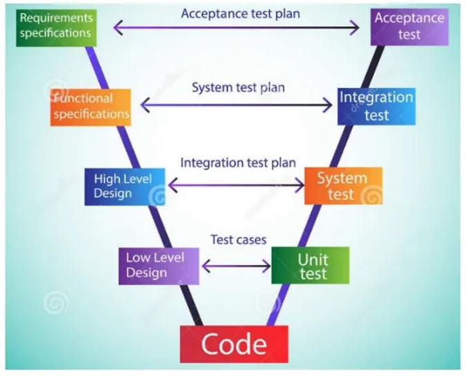
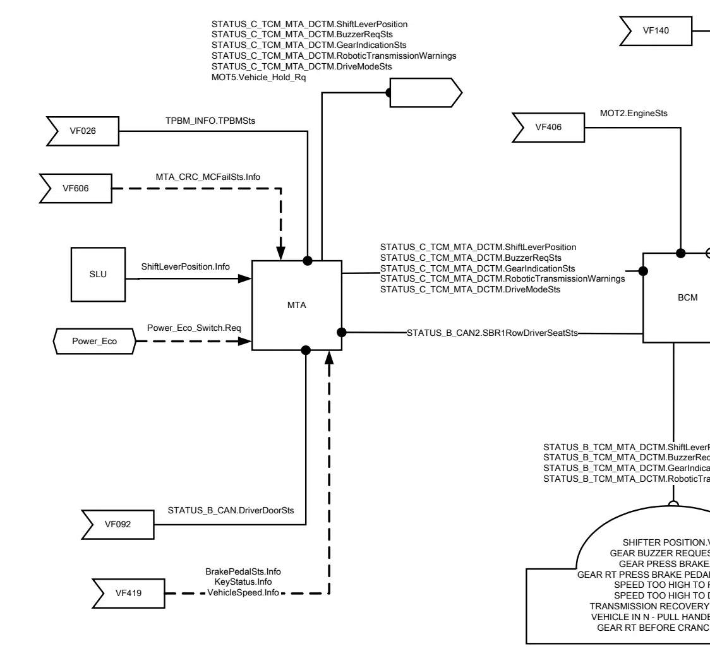

Functional Specifications (VF)¶
Every function in a modern vehicle — from the climate control to the gearbox indicator on the dashboard — is described, before a single line of software is written, in a functional specification. In the FCA/Stellantis world this document is called a VF (Vehicle Function). It is written by a dedicated professional figure, the functionalist, and it is the reference you will constantly open when writing test cases, setting up a HIL bench, or chasing a bug: if the car behaves differently from what the VF says, either the software or the document is wrong.
This article explains what a VF contains, how it is structured, and then walks through a real example — VF200, the Gearbox Status Management function of a BEV project — so you can recognize every section when you meet one at work.
What a VF is (and is not)¶
A VF gives a complete view of the behavior of one function:
- the list of features the function offers,
- the vehicle nodes (ECUs) involved and the signals they exchange,
- the expected behavior under the different vehicle operating conditions (key-on, key-off, cranking, low battery, …),
- the diagnosis strategy and the recovery behavior adopted when something fails,
- a history of the changes made with respect to previous versions.
Two properties are worth stressing:
- A VF is not tied to the component structure. It describes what the function must do, not how a specific ECU is built. The same function may be re-allocated to different hardware across projects without changing the VF's logic.
- The software is written starting from the VF. Downstream, requirements and test cases are derived from it — which is why a vague VF produces vague software.
Position in the V-model¶

The VF sits on the left branch of the V-model, just below the requirements specifications: requirements say what the vehicle must do, the VF says how each function behaves to achieve it. On the right branch, the VF is mirrored by the integration and system test phases — the tests that verify the implemented function against the specification. This is why you, as a test engineer, will read VFs even if you never write one.
One function, many VFs
A car-level feature area (car access, theft protection, climate, braking, lighting, infotainment, vehicle dynamics, energy management, …) is usually covered by several VFs, one per function. The VF set of a vehicle program together describes its entire E/E functional behavior.
Naming and versioning¶
A VF is identified by the function name followed by an alphanumeric code:
<Function Name> [ VF<num> _ V<x> _ R<y> ]
- VF number — identifies the function itself (e.g. VF200).
- V — Version — versions the functionality according to the vehicle set-up (different architectures or configurations may need different versions).
- R — Release — tracks the evolutions of the same VF over time (bug fixes, adaptations when porting the function to a new project).
So VF200_V5_R4R3_P250FL14 reads as: function 200, version 5 (releases R3 and
R4 merged), ported to project 250FL14.
Always quote the full identifier
When you reference a VF in a test report or a defect, write the complete
VF_V_R string plus the project code. "The gearbox VF" is ambiguous —
release R3 and R4 of the same version can specify different behavior, as
the example below shows.
Anatomy of a VF¶
Although layouts vary slightly between OEM templates, a VF contains the same logical sections.
Revision notes¶
The document opens with a revision table: for every release, the date, the author (the VF owner), and the list of changes — usually referencing a change request number (CR). If the VF was ported from another project, the origin project is declared here. This table is the first thing to check when a test fails "against the spec": you may be reading an outdated release.
Functional diagram¶
The functional diagram is a graphical map of the function: every involved node, every connection between nodes, and the CAN/LIN messages and signals exchanged on each branch.
Reading conventions you will find in these diagrams:
- Different colors identify the different networks (C1CAN, C2CAN, C3CAN, BHCAN, PCAN, LIN, …).
- On each connection branch, the message name and the transmitted/received signal names are annotated.
- Nodes drawn with two colors act as gateways (direct or indirect) between networks.
- Numbers inside the node blocks reference the VFs from which signals come or to which they go — this is how you navigate from one VF to another.
- Node outputs are not necessarily bus messages: they can also be acoustic or visual signals perceived directly by the user, e.g. an LED or a buzzer.
Working conditions¶
The working conditions table states under which vehicle states the function is operational. Typical rows:
| Working mode | Meaning |
|---|---|
| Key off (+30) | Function active on permanent battery supply |
| Key on (+15) | Function active with ignition on |
| Timed, from key off | Function stays alive for a timed window after key-off |
| Excluded during crank (+) | Function suspended while the starter is cranking |
| Excluded with battery discharged (+) | Function cut off under low battery |
Each row is marked Yes/No, with remarks for the timing (in minutes) or the exclusion mode (SW or HW). A simple function may live only at key-on; a body function often needs key-off and timed operation too.
Function description — the heart of the VF¶
This is the core section, and the longest. It starts by listing the nodes involved, distinguishing those that "make logic" (implement the algorithm) from those that merely forward or display information, with their input/output signals. Then it describes the behavior in detail, typically as:
- structured requirements —
If … then … else …rules, often written in shall-style ("the MTA shall send …"), - truth tables mapping input combinations to outputs,
- state machines for operating conditions,
- timeouts and thresholds expressed as named calibration parameters (never hardcoded numbers in the logic itself).
The behavior is usually split per key condition (@KeyStatus = keyon,
@KeyStatus = keyoff, …), because most functions behave differently when the
vehicle is asleep.
Working characteristics (parameters)¶
All tunable values — thresholds, timeouts, debounce times — are collected as configuration parameters, each with a description, the node that owns it, and where the value is implemented (PROXI, end-of-line programming, part number, or to be defined with the supplier). Test engineers care about these a lot: changing a parameter is a calibration change, not a software change, and tests must often be repeated per parameter set.
CAN wake-up¶
A short section states whether activating the function can wake the CAN network up (e.g. a door handle pull waking the body CAN), with a table of the triggering events per node. This matters for power management tests.
Diagnosis and recovery¶
The last functional section describes, for every input the function depends on, what happens when it fails:
- the diagnosis type (electrical fault, plausibility fault, missing message, CRC/message-counter failure),
- which ECU stores the DTC and with which detection time (UDM),
- the recovery strategy: the default/fallback values the function uses while the fault is active.
The CDD has the full diagnosis detail
The VF only sketches the diagnosis strategy. The complete description of DTCs, validation/invalidation conditions and fault debouncing lives in the CDD (CANdela Diagnostic Description) of each ECU — you will work with CDD files in the diagnosis lessons.
Companion files: DBC and LIN files¶
A VF never stands alone. The network-level truth about messages and signals is kept in two companion databases:
- the DBC file, one per CAN network (e.g. BHCAN), mapping every message, signal, scaling and node;
- the LIN description file, doing the same for the LIN sub-networks (e.g. the wiping functionality).
When a VF says "the MTA shall send STATUS_C_TCM_MTA_DCTM.GearIndicationSts",
the DBC tells you the message ID, cycle time, start bit, length and value table
of that signal. You will read and edit DBC files constantly in CANalyzer/CANoe.
Case study: VF200 — Gearbox Status Management (BEV)¶
The best way to understand the structure is a real document. The example VF is VF200_V5_R4R3, Gearbox Status Management – BEV, for FCA project 250FL14 (Vehicle Function Area: Powertrain Management, Group: GearBox). The function manages everything the driver sees and hears about the transmission: the gear indication on the instrument panel, the blinking of that indication, the warning messages, the buzzer, the drive-mode (Eco/Power) management, and the vehicle-hold / parking-brake requests.
The revision notes alone teach a lesson: across releases, a parameter
(T_SHOW_OFF_BCM) was deleted as unnecessary, signal names were corrected
(Power_Eco.Req → EcoPower.Req), diagnosis timers were aligned
(MissingMsg_Fast_Time → MissingMsg_Default_Time), and the driver-exit logic
was changed from AND to OR between seat belt and door status — exactly the kind
of detail that flips a test result.
Nodes and signal flow¶

The nodes that make logic are three:
| Node | Role in VF200 |
|---|---|
| MTA (transmission controller) | Reads the lever, decides the gear, requests warnings/buzzer, manages the drive-mode button and the vehicle-hold request |
| BCM (body control module) | Acts as a direct gateway: routes STATUS_C_TCM_MTA_DCTM from C-CAN to B-CAN (STATUS_B_TCM_MTA_DCTM), and forwards the seat-belt status from STATUS_SDM and the engine status from STATUS_C_CAN |
| IPC (instrument panel cluster) | Displays the gear position, the blinking, the text warnings, drives the buzzer |
The main inputs the MTA consumes:
| Signal | Carried by | Meaning |
|---|---|---|
ShiftLeverPosition.Info |
SLU (lever unit) | Requested lever position; the ESM lever has 3 stable positions R–N–D |
BrakePedalSts.Info, KeyStatus.Info, VehicleSpeed.Info |
via VF419 | Brake pedal, key state, vehicle speed |
TPBM_INFO.TPBMSts |
via VF026 | Transmission park brake status |
STATUS_B_CAN.DriverDoorSts |
via VF092 | Driver door open/closed |
STATUS_B_CAN2.SBR1RowDriverSeatSts |
SDM via BCM gateway | Seat belt fastened |
MOT2.EngineSts |
via VF406 | Engine OFF / cranking / ON |
Power_Eco_Switch.Req |
Power_Eco button | Drive-mode selection |
flowchart LR
SLU["SLU lever unit"] -->|ShiftLeverPosition| MTA
PWR["Power_Eco button"] -->|Power_Eco_Switch.Req| MTA
V419["VF419 signals<br/>brake / key / speed"] --> MTA
TPBM["VF026 TPBM"] -->|TPBM_INFO.TPBMSts| MTA
MTA -->|"STATUS_C_TCM_MTA_DCTM"| BCM
MTA -->|"MOT5.Vehicle_Hold_Rq"| NET["C-CAN"]
SDM["SDM seat belt"] -->|STATUS_SDM| BCM
BCM -->|"STATUS_B_TCM_MTA_DCTM<br/>(gateway B-CAN)"| IPC["IPC cluster"]
IPC --> DRV(("Driver:<br/>display, blink, buzzer"))Working conditions¶
VF200's table is instructive: most sub-functions (blinking, buzzer, warnings,
gear-change request, power-eco management, …) are active at key-on (+15),
some remain active in a timed window after key-off (the IPC must keep
showing indications for T_SHOW_OFF_IPC), and some are excluded during
cranking or with low battery. A function's behavior is always qualified
by which of these conditions is active — in the requirement text you will see
guards like @KeyStatus.info = Keyon_EngineOff: before every rule.
Gear-change request logic¶
The core algorithm decides whether a lever movement is accepted. The pattern repeats for N, R and D:
- At key-on, engine off: the gear is accepted only if the brake pedal is
pressed at the moment of the lever transition; otherwise the MTA emits
RoboticTransmissionWarnings = Press_Brake_Pedal_Repeat_Warningfor aTmessagetime. - At key-on, engine on, engaging R: if coming from D, the vehicle speed
must be ≤
Rthreshold; if coming from N, the brake must also be pressed. If the speed is too high, the MTA sendsVehicle_Speed_Too_High_to_Shift_Rand forces N — but as soon as speed drops below the threshold (lever still in R), it stops the warning and engages R. - Engaging D mirrors this with
Forwardthreshold(a negative first-trial value of −3 km/h — the car may still be rolling slightly backwards).
Mismatch detection: the MTA continuously compares the lever position with
the actually engaged gear (and the park-brake status). If a mismatch persists
longer than T_Gear_Mismatch (first trial 500 ms), it sets
GearIndicationSts = Blinking and BuzzerReqSts = OtherCaseSoundOn —
that is the blinking gear letter and the beep you hear when the gearbox could
not do what you asked.
Drive-mode (Power_Eco) management¶
The Power_Eco button cycles the drive mode. The sequence is
Normal → Eco → Power → Eco → … — note Normal is only the predominant
mode at startup; after that the button toggles between Eco and Power. Each
press is debounced (Tdebounce, first trial 60 ms) and mapped onto
DriveModeSts:
stateDiagram-v2
[*] --> Normal: startup (DriveModeSts = No_program_Selected)
Normal --> Eco: button press (after Tdebounce)
Eco --> Power: button press
Power --> Eco: button pressAt every key-on→key-off transition the MTA reports
DriveModeSts = No_program_Selected for the T_SHOW_OFF_MTA window.
Vehicle-hold (transmission parking brake) scenarios¶
The trickiest part of VF200 is MOT5.Vehicle_Hold_Rq — when the MTA asks to
hold the vehicle. The VF enumerates seven scenarios, with explicit priority
rules (e.g. the driver-exit scenarios override normal operation). Two of them
show the safety thinking:
- Switch-off: at key-on→key-off, if the last known speed was below
TPBM_thresholdthe MTA requests hold; otherwise it warnsVehicle_In_Neutral. - Driver exit in D/R (7th scenario): at key-on engine-on, if the driver opens the door and unfastens the seat belt while in D or R, and the speed is below the threshold, the MTA autonomously shifts to N and requests hold. Exit conditions require the driver to be back (door closed / belt fastened) and a fresh, brake-pressed lever movement.
OR vs AND is a safety decision
The 6th scenario (driver exit in N) triggers with door open or belt unfastened; the 7th requires both. This OR was introduced by a change request — a reminder that these logical operators are deliberate safety choices, and that tests must cover each side of them.
Indications on the cluster¶
The IPC translates each MTA signal into something the driver perceives. The mapping is one-to-one and fully testable:
| MTA signal value | IPC indication |
|---|---|
GearIndicationSts = Blinking |
Shifter position display blinks |
BuzzerReqSts = OtherCaseSoundOn |
Gear buzzer on |
RoboticTransmissionWarnings = Press_Brake_Pedal_Warning |
"GEAR PRESS BRAKE" text |
… = Press_Brake_Pedal_Repeat_Warning |
"GEAR RT PRESS BRAKE REPEAT" text |
… = Vehicle_Speed_Too_High_to_Shift_R / _D |
"SPEED TOO HIGH TO R / D" text |
… = Trans_Recover_Mode_Warning |
"TRANSMISSION RECOVERY MODE" text |
… = Vehicle_In_Neutral |
"VEHICLE IN N – PULL HANDBRAKE" (also at key-off, for T_SHOW_OFF_IPC) |
The IPC also runs its own internal logic: it activates
GearInsertNAndPressBrakeToStart.Req whenever the lever is not in N or the
brake is not pressed (shown at key-on engine-off as "GEAR RT BEFORE CRANKING"),
and derives EcoPower.Req from the received DriveModeSts.
Diagnosis and recovery in VF200¶
The diagnosis table lists every input, the fault type, and the storing ECU. The recovery rules show the standard patterns you will meet everywhere:
| Fault | Detecting ECU | Recovery while fault active |
|---|---|---|
ShiftLeverPosition electrical / plausibility fault |
MTA | DTC validated, "Motor Fault" to IPC; keep D if driving forward, otherwise force N and declare ShiftLeverPosition = N |
Power_Eco_Switch.Req stuck (TStuck, 20 s) or electrical |
MTA | Force DriveModeSts = No_program_Selected, go to Normal mode |
STATUS_B_CAN missing (> MissingMsg_Default_Time) |
MTA | Assume DriverDoorSts = Closed |
STATUS_B_CAN2 missing |
MTA | Assume Seat Belt Fasten |
TPBM_INFO missing or CRC/MC fail (MTA_CRC_MC_wrong_timer) |
MTA | Use last valid TPBMSts (default Released) |
STATUS_SDM missing |
BCM | Forward Seat Belt Fasten |
STATUS_C_CAN, STATUS_B_TCM_MTA_DCTM, EDR_INFO missing |
IPC | Assume EngineSts = On, requests Not_Active, brake switch Not_active |
Note the philosophy: fallback values are chosen on the safe side — assume the door is closed and the belt fastened (so no spurious hold request), declare the engine running, and neutralize driver-visible requests.
Configuration parameters¶
VF200 closes with its calibration table — the knobs a test engineer can turn:
| Parameter | Meaning | First trial value |
|---|---|---|
Rthreshold |
Max speed to engage reverse | 3 km/h |
Forwardthreshold |
Min speed to engage drive | −3 km/h |
TPBM_threshold |
Speed below which vehicle hold can be requested | 4 km/h |
T_Gear_Mismatch |
Delay before declaring lever/gear mismatch | 500 ms |
Tdebounce |
Button debounce / filtering | 60 ms |
TStuck |
Button-pressed-too-long plausibility fault | 20 s |
Tmessage |
Duration of a warning message to the IPC | 10 s |
T_SHOW_OFF_MTA / T_SHOW_OFF_IPC |
Keep sending/showing after key-off | 8 s / 7 s |
MissingMsg_Default_Time |
Missing-message detection time | 2.5 s |
MTA_CRC_MC_wrong_timer |
CRC / message-counter failure debounce | 3 |
For your test cases
Every If … then rule, every truth-table row, every scenario number and
every parameter in a VF is a candidate test case. When you move to the
test-design lessons, a VF like VF200 is exactly the document you will be
asked to derive cases from — boundary values around Rthreshold,
TPBM_threshold and the mismatch timer are the obvious targets.
Key takeaways
- A VF (Vehicle Function) is the functionalist's document describing the complete behavior of one vehicle function; software and tests are derived from it, and it is independent of the component structure.
- Naming:
Function [VFn_Vx_Ry]— Version tracks the set-up, Release tracks evolutions; always reference the full identifier. - Fixed structure: revision notes, functional diagram (nodes, gateways, CAN/LIN messages per network), working conditions, function description, parameters, CAN wake-up, diagnosis & recovery, plus DBC/LIN companion files (and the CDD for full diagnosis detail).
- Requirements are written per key condition with named calibration parameters — never hardcoded values.
- The VF200 example shows it all: lever/gear mismatch → blinking + buzzer, speed-thresholded gear engagement with forced-N fallback, seven prioritized vehicle-hold scenarios, one-to-one IPC indication mapping, and safe-side recovery defaults for every failed input.
Source material¶
This article was distilled from the academy lesson materials:
- :material-file-pdf-box: Presentation Functional specification — PDF, 1.6 MB
- :material-file-pdf-box: VF example — PDF, 220.2 KB